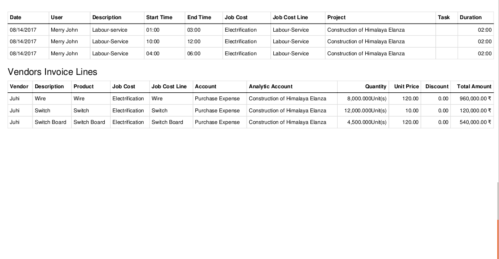
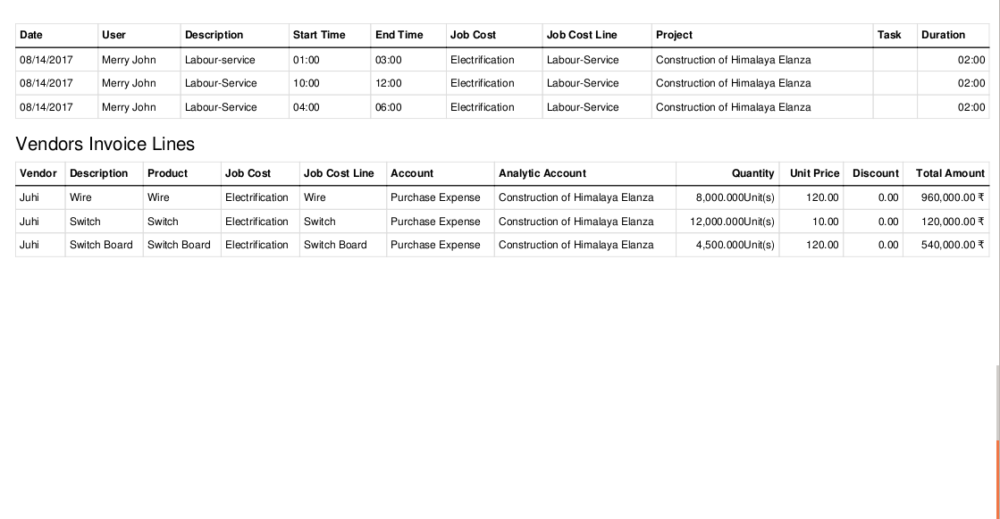

Creating Job orders for Project/Contract/Job
Kanban View of Job Orders

This module allow you to manager any type of project/contracts with its job costing (contracting) and job cost sheets.
Main Features:
- Allow you to create job cost sheets for your projects/contract.
- Allow you to have Project/Contract with Job orders.
- Allow you to create Project/Job Notes.
- Allow you to create Job Order Notes.
- Allow you to manage material requision for Job orders.
- Allow you to set BOQ for Jobs.
- Allow you to configure/setup Material, Labour and Overheads on jobs cost sheet where you can plan for your different jobs of your project/contract.
- Allow you to have multiple job cost sheet for single project/job/contract.
- PDF reports for Job Cost Sheet and Job Orders.
- Job Types setup for different types of job you are doing for your customers.
- Custom job stages for your job orders.
- Allow you to setup your subcontractors.
- Allow your employee/workers to fill timesheet based on job they are doing and allow to select job cost center on timesheet lines/activities.
- Materials Requisition / BOQ request and manage. This also allow on the fly creating purchase orders from Materials Requisition / BOQ.
- Unique sequence for job cost sheets.
- Create subtask/sub jor orders for main job order/task.
- Manage material planning and consumption per job order (Manually).
- Gives complete idea about your planned cost and actual cost since system allow you to setup planned amount for material, labours, overhead on job cost sheet and same time show actual amounts showing on cost sheet automatically. This actual amount is based on linking purchase order, vendor bills, timesheets where system allow you to select Job cost center and Cost line on Purchase order, Vendor bills and Timesheets.
- Main feature of this actual cost is that if you do not select Cost line on Purchase order, Vendor bills and Timesheets then system will crete/add new cost sheet line under that job cost center on confirmation of document.
- For more details: See Video in live preview
Highlighted Steps:
Create Project/Contract -> Create Job Orders -> Create Multiple Job Cost Sheets under Same Project -> Plan your materials, labour and overhead for each Jobs -> View of Planned and Actual Amount/Qty by each Cost Sheet Lines (Material, Labour and Overheads) -> Allow your purchase, accounting and HR department to select cost center (cost sheet) and cost center line (cost sheet line) to encode for expenses and labour works. -> Create Material Requision Request -> Prepare Notes/ToDo lists for Projects and Jobs. -> .....
Menus Available:
Related App(s): https://apps.odoo.com/apps/modules/10.0/odoo_customer_progress_billing/
Main Features:
- Allow your employees to Create Purchase Requisition.
- Employees can request multiple material/items on single purchase Requisition request.
- Approval of Department Head.
- Approval of Purchase Requisition Head.
- Email notifications to Department Manager, Requisition Manager for approval.
- Request for Purchase Requisition will go to stock/warehouse as internal picking / internal order and purchase order.
- Warehouse can dispatch material to employee location and if material not present then procurment will created by Odoo standard.
- Purchase Requisition user can decide whether product requested by employee will come from stock/warehouse directly or it needs to be purchase from vendor. So we have field on requisition lines where responsible can select Requisition action: 1. Purchase Order 2. Internal Picking. If option 1 is selected then system will create internal order / internal picking request and if option 2 is selected system will create multiple purchase order / RFQ to vendors selected on lines.
- For more details please see Video on live preview or ask us by email...
If user select job cost line on Purchase order then system will not add new line but system will compute purchased quantity and show it to cost sheet.

 

If stock is available then Purchase Requisition user can select Internal Picking in Requisition Action on Requisition line and if stock is not avialable and if they want to create purchase order they can select multiple vendors and system will create multiple RFQ's based on Vendors selected on lines.
If you need any help or want more additional features, you may contact us through:
Email: contact@probuse.com
Website: www.probuse.com
Skype: mustufa_probuse
Probuse Consulting Service Pvt Ltd is an Software and Web development specialist which offers complete business application together. We are well experienced to provide a face for your business on the software and Internet level.
Probuse Consulting Service Pvt Ltd is a specialist in Odoo/OpenERP services and could give your business open source hand to drive.